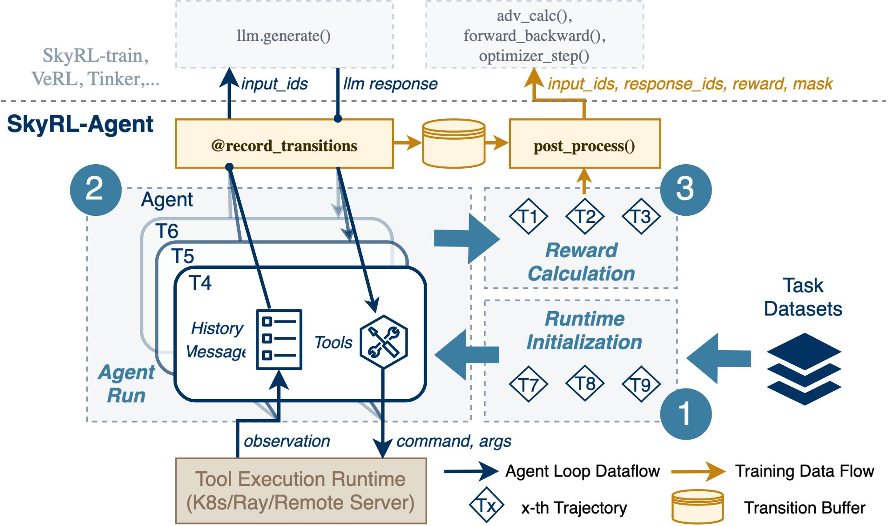
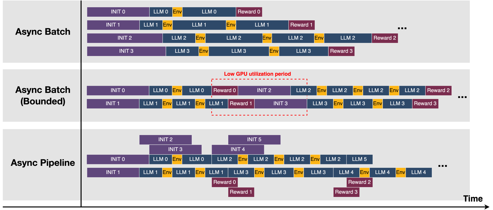
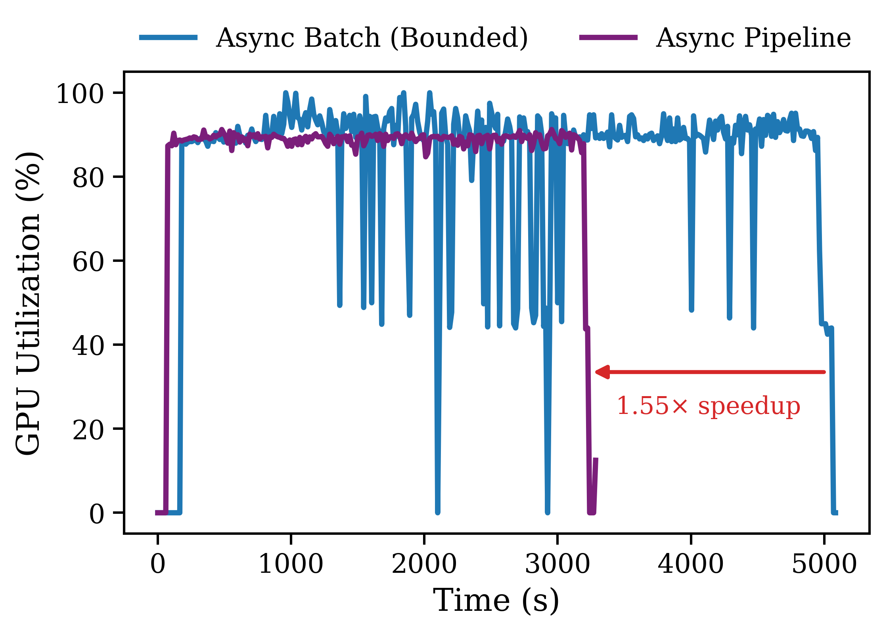
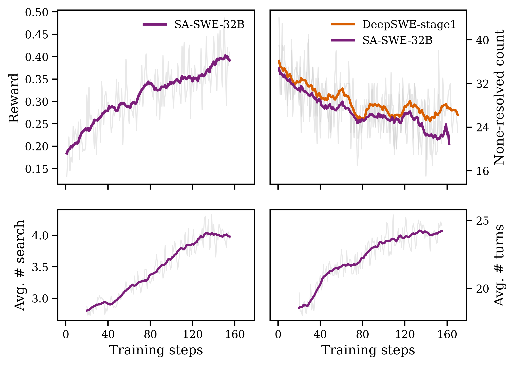

00全景与读法
高效 agentic RL 的核心矛盾始终只有一个：生成阶段（rollout）太慢、太不均匀，使训练算力闲置。Dispatch 02 记录 rollout 占整轮 wall-clock 约 70% 且被长尾轨迹拖累，Dispatch 08 记录多轮长程 agent 让长尾更严重。prime-rl（Prime Intellect）与 SkyRL-Agent（Berkeley NovaSky）都直指这一瓶颈，但前者重构训练系统本体（面向规模：1000+ GPU、1T+ MoE、去中心化），后者优化编排调度层（面向效率：dispatcher 1.55× 加 AST 工具配方，SA-SWE-32B 由 24.4% 训到 39.4% Pass@1）。两者互补可组合，不是二选一。
每一节固定三段：正文（来自原文，保留全部数字与限定语）/ 双栏对照（左栏灰为 prime-rl，右栏橙为 SkyRL-Agent，全文统一）/ 差在哪（下方色块：差异、原文是否给了理由、对 RL-on-NPU 的含义）。数字按来源标注：第三方 独立测量、自报 论文或仓库口径、推断 本站分析。本篇所有规格与评测分数均为论文或仓库口径，原文标注为 provisional，缺统一第三方复测。
一条贯穿全文的线索：两家在不同层解决同一个瓶颈。prime-rl 的答案是把 Trainer / Inference / Orchestrator 拆开各自伸缩，再用 AIPO loss 补回异步带来的 off-policy 偏差；SkyRL-Agent 的答案是不碰 trainer，只把 rollout 的调度粒度从"批"降到"轨迹"，并用工具抬高正样本密度来加强 GRPO 的组内对比信号。
01同一瓶颈，不同层次
一旦 agent 要多轮调工具、跑测试、读代码库，单条轨迹长度从几百 token 膨胀到几万 token，batch 内最长的一条决定整批何时结束，同步范式下这是结构性算力浪费。prime-rl 与 SkyRL-Agent 都指向这个瓶颈，但站位不同，不应在同一层面直接比较：prime-rl 解决"如何把异步 RL 扩到全球级算力"，SkyRL-Agent 解决"如何在已有的栈上，让多轮 agent 训得更快更省"。

这张图怎么读
看两条链的终点：prime-rl 链收束在"本身就是训练系统"，SkyRL-Agent 链收束在"聚焦多轮 agent 效率"。前者的每一项（解耦、规模、去中心化）都是训练系统的属性，后者的每一项（轻量、后端无关、叠加）都是编排层的属性——它们并非同一坐标轴上的两个点，这正是"不应在同一层面直接比较"的图示。最值得注意的是中间那条虚线的方向：它从 prime-rl 指向 SkyRL-Agent，表示后者可以叠在前者这类 trainer 之上，即第 07 节的组合形态。
prime-rl
重量级、全栈、全解耦的异步训练系统本身——不是叠在其他 trainer 上的插件，自带分布式策略优化、自带推理服务、自带数据流编排；投入方向是规模（1000+ GPU、1T+ MoE）与去中心化（INTELLECT 血统）。
SkyRL-Agent
轻量、后端无关的 agent 编排层——刻意不重造 trainer，叠在已有的 SkyRL-train / VeRL / Tinker 之上，只专注把多轮 agent 的 rollout 效率与训练配方做好。
差在哪差在抽象层次而非优劣：一个重构训练系统本体，一个优化编排调度层。原文给出的理由是两者的投入方向不同（规模与去中心化 vs 多轮 agent 效率），并明确写为"互补可组合、非直接竞争"。对 RL-on-NPU 的含义是选型问题要拆成两问：训练系统本体在昇腾上采用什么架构（参照 prime-rl），编排层能否以最小改动接入 Ascend 后端（参照 SkyRL-Agent）。
02prime-rl：三组件全解耦的异步训练系统
prime-rl 的口号是 Async RL Training at Scale，Apache-2.0，定位"易用、可 hack，同时能扩到 1000+ GPU、支持 1T+ MoE"。骨架是三个完全解耦、各自独立伸缩的组件：Trainer——基于 FSDP2 的分布式策略优化，叠加专家并行（EP，服务 MoE）与上下文并行（CP，服务长上下文与长 agent 轨迹），是真正消耗梯度、更新权重的部分；Inference server——用 vLLM 产出 rollout、跑 FP8 推理，消耗 rollout 算力，可独立横向扩展；Orchestrator——协调推理与训练之间的数据流，决定哪些 rollout 送入 trainer、何时同步权重、如何衔接两侧节奏。

这张图怎么读
先看两条双向实线：Trainer 与 Inference 之间没有直接连线，所有数据流都经过 Orchestrator——这就是"三组件全解耦"的结构含义，任何一侧都可以在不改动另一侧的情况下横向扩展。再看两条虚线：off-policy 修正接在 Trainer 一侧而不是 Orchestrator 一侧，说明 staleness 是在 loss 层面而非调度层面被处理的；部署层以"承载"关系包住整个核心，说明 Slurm / K8s 是运行底座而非组件之一。最值得看的位置是 Environments Hub 到 Orchestrator 的"任务与奖励"边：环境是从 Hub 拉取的即插即用模块，而非训练系统的固有部分。
prime-rl
自成一栈：Trainer（FSDP2 加 EP 加 CP）/ Inference（vLLM 加 FP8）/ Orchestrator 三组件各自伸缩；环境经 Environments Hub（verifiers 库）即插即用，内置 SWE 与 agentic 环境；多节点支持 Slurm / K8s，宣称一行 SLURM 部署；E2E 覆盖 SFT / RL / 评测；支持多模态 VLM（Qwen3-VL）。自报 规格均 provisional。
SkyRL-Agent
不提供 trainer 与推理服务；训练后端由所选的 SkyRL-train / VeRL / Tinker 承担，环境来自 skyrl-gym（数学、编码、搜索、SQL）。它在这一层只负责 agent 编排与 rollout 调度。
差在哪prime-rl 把训练、推理、编排三者拆成可独立伸缩的服务，原文给出的理由是规模：只有解耦，rollout 侧与训练侧才能按各自的负载扩展。SkyRL-Agent 在这一层没有对应物，因为它把这些交给后端。对 RL-on-NPU 的直接含义见第 08 节：三组件解耦正是 MindSpeed-RL 应当采用的架构，把训练与推理拆成可独立伸缩的服务，而非塞在同一进程里同步运行。
03为什么全异步必须配 off-policy 修正，以及 rollout 成本怎么降
解耦的代价是 staleness。trainer 在更新权重的同时，inference server 还在用稍旧的策略继续产出 rollout，这批样本回到 trainer 时已不是当前策略生成的——正是 Dispatch 02 的 staleness 问题。off-policy 数据直接当 on-policy 用，梯度有偏、训练会失稳。prime-rl 的解法是 AIPO loss 加 trajectory merging：AIPO（异步重要性策略优化一类的 loss）在目标里做重要性修正，把"行为策略 vs 当前策略"的偏差补回来，机理同 Dispatch 02 的 TIS / MIS 这条 importance-sampling 修正脉络；trajectory merging 把跨步骤、跨时刻产出的轨迹片段拼接对齐，让异步流水线产出的零散数据能被一致消费。没有这套修正，全异步将退化为系统性偏差。
降低 rollout 成本的手段。rollout 既是瓶颈也是主要开销，prime-rl 在推理侧叠加多项优化：FP8 推理（吞吐翻倍、显存减半）、PD 分离（prefill 与 decode 拆开调度各自打满，避免长 prompt 的 prefill 阻塞 decode）、以及 flash-attention / quack-kernels 等自定义核，合计直接降低单位 token 的 rollout 成本。其 SWE 示例训练的是 Qwen3-30B-A3B（MoE）。投入方向是 1000+ GPU、1T+ MoE、去中心化全球分布式训练——血统直接来自 INTELLECT 系列（INTELLECT-2 是 32B 的全球分布式 RL），目标复现 INTELLECT-3.1。其他框架在单集群内优化，prime-rl 投入的方向是"算力可以全球分布、异步聚合"。自报 规格均 provisional。
prime-rl
off-policy 修正内置于 loss：AIPO 加 trajectory merging。rollout 成本从推理内核层压：FP8（吞吐翻倍、显存减半，自报）、PD 分离、自定义核。
SkyRL-Agent
不做 loss 层修正，off-policy 处理依赖所选后端；FP8 是否可用同样取决于后端。它压 rollout 成本的路径是调度粒度与工具配方（第 05 节），不涉及推理内核。
差在哪prime-rl 把 staleness 当作异步化的必要代价在 loss 层解决，原文给出了机理（重要性修正补回行为策略与当前策略的偏差）但未给出 AIPO 相对 TIS / MIS 的量化对比；SkyRL-Agent 则把这一责任外推给后端。对 RL-on-NPU 的含义：只要走异步，昇腾侧同样承受 staleness，同样需要 importance-sampling 类的 loss 修正，无法回避；而 FP8 rollout 的收益（自报吞吐翻倍、显存减半）能否在 vLLM-Ascend 上保留，取决于第 08 节的算子重写与训推一致验证。
04SkyRL-Agent：后端无关的 agent 层
SkyRL-Agent（arXiv 2511.16108，2025-11-20，Apache-2.0）是 SkyRL 栈里的 agent 层，定位"高效的多轮 / 长程 agent 训练加评测"。SkyRL 栈分工清晰：skyrl-train（训练后端）、skyrl-gym（数学 / 编码 / 搜索 / SQL 等环境）、skyrl-agent（本文对象，agent 层）、skyrl-tx（把 Tinker API 接进来的适配层）。后端无关是关键设计：SkyRL-Agent 刻意不重造 trainer，而是与训练后端解耦，可互操作 SkyRL-train / VeRL / Tinker（Tinker 经 skyrl-tx 接入）。对工程团队的实际意义是：团队可能已在 VeRL 上有整套 pipeline，或只想用 Tinker 的托管 API 起步——SkyRL-Agent 允许保留既有训练栈，只把 agent 编排与 rollout 调度这一层替换，不必为验证高效 agent 训练而绑定某个重量级栈。这与 prime-rl 自成一栈的设计哲学完全相反，各有取舍。

llm.generate() 与 adv_calc() / forward_backward() / optimizer_step()），虚线下方是 agent 层的三个阶段——① Runtime Initialization 从 Task Datasets 初始化轨迹，② Agent Run 在 History Message 与 Tools 之间循环、经 Tool Execution Runtime（K8s / Ray / Remote Server）执行命令并回收 observation，③ Reward Calculation 计算奖励；@record_transitions 把 agent 循环数据流写入 Transition Buffer，post_process() 再转成 input_ids / response_ids / reward / mask 送回后端。自报 取自 NovaSky-AI/SkyRL 仓库 skyrl-agent README。这张图怎么读
这张图的关键在于那条水平虚线：agent 层与后端之间只有三种交换——向上送 input_ids、向下收 llm response、最后向上送一批 input_ids / response_ids / reward / mask。后端无关的含义就是这三个接口足够窄，任何能提供 generate() 与一次 forward-backward-step 的训练栈都能接上。再看两种颜色的箭头：深蓝的 Agent Loop Dataflow 在下半部循环（observation 进、command 与 args 出），橙色的 Training Data Flow 只在上半部单向流动——两条流在 @record_transitions 处交汇，它是把"多轮交互"变成"训练样本"的唯一节点。最值得看的位置是右侧 T1–T9 的菱形：轨迹是逐条初始化、逐条计算奖励的，这为第 05 节的 per-trajectory 调度提供了结构基础。
prime-rl
自成一栈：后端即自身（FSDP2 加 vLLM），不存在"接哪个 trainer"的问题；换来的是全栈可控与规模化，代价是绑定整套栈。
SkyRL-Agent
后端无关：可互操作 SkyRL-train / VeRL / Tinker（经 skyrl-tx）；保留既有训练栈，只替换 agent 编排与 rollout 调度层；代价是 loss 修正、FP8 等能力取决于所选后端。
差在哪两者设计哲学相反。原文给出的理由是工程团队的既有资产：已有 VeRL pipeline 或希望以 Tinker 托管 API 起步的团队不必为验证高效 agent 训练而迁移整栈。对 RL-on-NPU 的含义：后端无关的 dispatcher 原则上可接入 Ascend 后端——它本就不绑定训练栈，接 NPU 后端是架构允许的方向（第 08 节）。
05两项提效机制：per-trajectory dispatcher 与 AST 工具配方
机制一：优化异步流水线 dispatcher，比朴素异步批处理 1.55× 加速。朴素异步批处理仍以"批"为单位调度——一批 rollout 里只要有一条长尾轨迹（多轮调工具、反复跑测试），整批就被它拖住、其余算力空转等它（正是 Dispatch 08 的长尾痛点）。SkyRL-Agent 的 dispatcher 做更细粒度的 per-trajectory 调度：先完成者先提交、空出的算力立刻接续下一条新轨迹，不等待最慢的轨迹，把"等待最慢"换成"先完成者先行"，在长程多轮场景下获得 1.55× 端到端加速。

这张图怎么读
横轴是时间，每一行是一种调度策略，颜色区分阶段（紫 INIT、深蓝 LLM、黄 Env、红 Reward）。要比较的不是各行总长，而是深蓝 LLM 段在同一通道上是否连续：中行红框内，两条通道各有一大段紫色 INIT 挤在 LLM 段之间，这段时间推理引擎无事可做——这就是"整批被长尾拖住、其余算力空转"的可视化。下行的处理方式是把 INIT 抬到通道之外并行执行（INIT 2 与 INIT 3 在 LLM 0 / LLM 1 运行时已经开始），使通道上只剩 LLM 与 Env 交替。最值得看的位置是下行 LLM 2 紧接 LLM 0、LLM 3 紧接 LLM 1 的两处衔接：这就是"先完成者先行、空出的算力立刻接续下一条"的具体形态。注意上行 Async Batch 没有并发上限，四条轨迹并列，它展示的是理想化的无约束情形，而非可比的基线。

这张图怎么读
两条曲线的平台高度都在 90% 附近，差别不在平台而在两处：一是蓝线在约 1300–3000 s 之间反复跌到 45–50%、并有两次跌到 0——对应图 4 中行红框的"低利用率时段"在真实运行中的反复出现；二是终点位置，紫线在约 3250 s 结束，蓝线延续到约 5050 s，两者之比即标注的 1.55×。读法上要注意这是一次运行的利用率曲线，纵轴是利用率而非吞吐，1.55× 是端到端时间之比；原文与图均未给出运行的模型规模、任务集与 GPU 数，因此该倍率是否在其他配置下保持，需要第 10 节列出的信息。
机制二：工具增强训练配方——AST-based 搜索工具。这一机制的因果链需要明确，并非仅是工具可用性提升：给 agent 一个 AST（抽象语法树）层面的代码搜索工具，让它能按符号与结构导航代码库而非做无结构的文本 grep → 更好的代码导航让 agent 更可能真正解出任务，直接体现为 rollout 的 Pass@K 提升 → Pass@K 提升意味着同一组 rollout 里有效正样本变多 → 而 GRPO 这类组内相对优势（group-relative advantage）算法，信号强弱恰恰取决于组内有没有"对 vs 错"的对比（全错则优势退化、梯度近乎为零），正样本变多 → 组内对比信号更强 → 训练更快更稳。所以工具增强与训练效率之间存在硬因果：工具抬高正样本密度，正样本密度支撑 GRPO 的对比信号。
prime-rl
治长尾的手段在系统层：全解耦让 rollout 侧独立伸缩、PD 分离避免 prefill 阻塞 decode、FP8 压单位 token 成本。原文未提及 per-trajectory 粒度的调度器或工具配方。
SkyRL-Agent
治长尾的手段在调度层与配方层：per-trajectory dispatcher（1.55×，自报）把"等最慢"换成"先完成者先行"；AST 搜索工具抬高 rollout Pass@K，进而加强 GRPO 组内对比信号。两者均不涉及推理内核。
差在哪prime-rl 降低的是每个 token 的成本，SkyRL-Agent 降低的是等待与无效样本的比例，两者作用于不同项，因此可以叠加。原文对 AST 机制给出了完整因果链（工具 → Pass@K → 正样本密度 → GRPO 信号），对 1.55× 只给了机理与倍率、未给出实验配置。对 RL-on-NPU 的含义：AST 工具配方是硬件无关的，纯属 rollout 阶段的环境与工具逻辑，可直接移植、不涉及算子；per-trajectory dispatcher 则恰好命中昇腾当前最突出的短板（第 08 节）。
06SA-SWE-32B 的结果
结果是 SA-SWE-32B：从 Qwen3-32B 基座（SWE-bench Verified 24.4% Pass@1）经纯 RL 训到 39.4% Pass@1，且相比此前相似性能模型成本下降 >2×。旁注：prime-rl 的 SWE 实践是训练 Qwen3-30B-A3B 解难 SWE 问题，并可复现 INTELLECT-3.1。自报 均 provisional。

这张图怎么读
四个面板要连起来读，它们正是第 05 节因果链的过程证据。左上 Reward 由约 0.18 升至约 0.40，是训练有效的直接指标；右上 None-resolved count 是一组内全部失败的任务数，它从约 36 降到约 22，且全程低于 DeepSWE-stage1——这正是"正样本密度上升、GRPO 全错退化的组变少"的量化体现，也是四个面板中最值得看的一个。左下 Avg. # search 由约 2.8 升至约 4.0，说明模型在训练中学会更多地调用 AST 搜索工具；右下 Avg. # turns 由约 18 升至约 24，说明轨迹随训练变长——这同时解释了为什么长尾问题会随训练加重、per-trajectory 调度在训练后期更为重要。读数时注意右上面板的 DeepSWE-stage1 曲线来自另一套训练配置，只能作为同类方法的参照而非受控对照。
prime-rl
代表产出：复现 INTELLECT-3.1；SWE 示例训 Qwen3-30B-A3B（MoE）。原文未给出该示例在 SWE-bench Verified 上的分数。
SkyRL-Agent
代表产出：SA-SWE-32B，Qwen3-32B 24.4% → 39.4% Pass@1（SWE-bench Verified），纯 RL，成本较此前相似性能模型下降 >2×。自报 provisional。
差在哪只有 SkyRL-Agent 一侧给出了可对照的 SWE-bench Verified 数字，因此第 07 节的"40% 区间"判断只以它为据。">2× 成本下降"的比较对象是"此前相似性能模型"，原文未指明是哪一个，引用时应保留这一限定。对 RL-on-NPU 的含义：这一结果证明纯 RL 在 32B 稠密模型上可以把 SWE agent 训到 40% 区间，且其两项提效机制都不依赖特定硬件。
07对比与定位：互补，不是二选一
两条提效路径指向同一瓶颈——rollout 占 70% 加长尾。两者可以组合，而非对立：SkyRL-Agent 的 agent 层理念（per-trajectory 细粒度调度加工具增强配方）与 prime-rl 的规模化异步 trainer 并不冲突——一个管"agent 怎么编排得高效"，一个管"训练怎么扩得够大"，理想形态是把前者的 agent 编排思路接到后者这类规模 trainer 上。选型取决于诉求：要规模、去中心化、1T MoE → 选 prime-rl；要轻量起步、不绑定后端、主攻多轮 agent 效率 → 选 SkyRL-Agent。

这张图怎么读
数一下汇入目标的边：左侧四条、右侧两条，六条边互不重复——没有任何一项手段在两侧同时出现，这是"互补可组合"的图示依据。再按作用对象分组：左侧四项中有三项（FP8、PD 分离、全解耦）作用于推理侧的单位成本与伸缩性，一项（AIPO）作用于训练侧的偏差；右侧两项分别作用于调度粒度与样本质量。最值得看的位置是"全解耦异步"与"优化 async dispatcher"这两条边：前者决定 rollout 侧能否独立伸缩，后者决定伸缩出来的算力是否被长尾闲置——两者恰是组合形态中需要对接的接口。
prime-rl
选它的诉求：规模、去中心化、1T MoE；接受绑定整套栈。它管"训练怎么扩得够大"。
SkyRL-Agent
选它的诉求：轻量起步、不绑定后端、主攻多轮 agent 效率。它管"agent 怎么编排得高效"。
差在哪一个数字对照（均 provisional）：两家都用 Qwen3-32B 量级做 SWE-bench Verified，SkyRL-Agent 的 SA-SWE-32B 纯 RL 把 24.4% 抬到 39.4% Pass@1；对照 Dispatch 12 提到的 DeepSWE 的 42.2%。可见开源纯 RL 的 SWE agent 正集中在 40% 区间竞争——既说明该范式已被多家独立验证，也说明尚无一家显著突破上限。本站判断：组合形态在原文中是"理想形态"而非已实现的集成，两者的接口对接（SkyRL-Agent 的 transition 输出对接 prime-rl 的 Orchestrator）尚无公开工作。
08对 RL-on-NPU 的意义
把这两家放回昇腾（MindSpeed-RL 加 vLLM-Ascend）的语境，各自都有可直接借鉴的部分（接 Dispatch 02 / 03 / 13）。prime-rl 是 GPU 侧的标准参照，几乎逐条对应 NPU 待办事项：三组件全解耦（Trainer / Inference / Orchestrator）正是 MindSpeed-RL 应当采用的架构，把训练与推理拆成可独立伸缩的服务而非塞在一个进程里同步运行；AIPO off-policy 修正 ≈ staleness 修正，只要走异步，昇腾侧同样承受 staleness，同样需要 importance-sampling 类的 loss 修正（对应 Dispatch 02 的 TIS / MIS），这是异步化的必要代价，无法回避；FP8 vLLM 推理 ≈ 昇腾 950 的原生 FP8，硬件已提供 FP8（Dispatch 03），推理栈（vLLM-Ascend）应当完成 FP8 rollout 路径的适配，把 rollout 成本压到与 GPU 侧可比。
SkyRL-Agent 的两项机制对 NPU 更接近直接可用：后端无关的 dispatcher 原则上可接入 Ascend 后端——它本就不绑定训练栈，接 NPU 后端是架构允许的方向；AST 工具配方是硬件无关的，纯属 rollout 阶段的环境与工具逻辑，可直接移植，不涉及算子；1.55× 的 per-trajectory dispatcher 恰好命中昇腾当前最突出的短板——GPU 侧有 sleep-mode 能在长尾等待时让闲置卡休眠或复用，昇腾当前缺这一手段、长尾空转代价更重，"先完成者先行"的细粒度调度正是缓解这一短板的低成本手段。
prime-rl
对昇腾的价值是架构参照：三组件解耦 → MindSpeed-RL 的服务化拆分；AIPO → 异步化必备的 loss 修正；FP8 vLLM → vLLM-Ascend 的 FP8 rollout 路径。三项都要求昇腾侧重新实现。
SkyRL-Agent
对昇腾的价值是可移植组件：dispatcher 接 Ascend 后端是架构允许的方向；AST 工具配方零算子依赖可直接移植；per-trajectory 调度补偿昇腾缺少 sleep-mode 的长尾空转代价。
差在哪两项硬性前提：FP8 与异步在 NPU 上落地，算子需要重写，且必须用 align-probe 验证训推一致——否则 FP8 推理出的 logits 与训练侧不一致，叠加异步 staleness，off-policy 修正会建立在错误的概率比上、训练直接偏离。换言之：架构思路可以借鉴，数值正确性必须在 NPU 上重新验证并保证。本站判断：借鉴顺序应是先 SkyRL-Agent 的两项硬件无关机制（低成本、可立即验证），再 prime-rl 的三组件解耦与 FP8 路径（依赖算子与一致性验证）。
09总表：prime-rl vs SkyRL-Agent
| 维度 | prime-rl | SkyRL-Agent | 本站判断 / 对 NPU 的含义 |
|---|---|---|---|
| 定位层次 | 重量级全栈异步训练系统（自身即 trainer） | 轻量后端无关 agent 层（叠在已有 trainer 上） | 不同层，互补可组合，非直接竞争 |
| 核心卖点 | Async RL at Scale，1000+ GPU / 1T+ MoE / 去中心化 | 多轮长程 agent 效率，1.55× dispatcher 加工具配方 | 前者压单位 token 成本，后者压等待与无效样本比例 |
| 解耦方式 | 三组件全解耦（Trainer / Inference / Orchestrator）各自伸缩 | 与训练后端解耦，agent 编排层可插拔 | 前者是 MindSpeed-RL 应采用的服务化架构 |
| off-policy 修正 | AIPO loss 加 trajectory merging | 依赖所选后端（本身聚焦调度而非 loss 修正） | 异步化在昇腾上同样需要 IS 类修正，无法回避 |
| FP8 | vLLM FP8 推理（原生），自报吞吐翻倍、显存减半 | 取决于后端 | 对应昇腾 950 原生 FP8；需算子重写与 align-probe 验证 |
| 后端 | 自带（FSDP2 加 vLLM，自成一栈） | 后端无关：SkyRL-train / VeRL / Tinker（经 skyrl-tx） | 后者接 Ascend 后端是架构允许的方向 |
| 规模目标 | 全球分布式、千卡、万亿参 MoE | 高效起步，单 / 多节点，聚焦效率而非极限规模 | 选型按诉求：规模选前者，轻量起步选后者 |
| 代表产出 | 复现 INTELLECT-3.1；SWE 示例训 Qwen3-30B-A3B | SA-SWE-32B（24.4 → 39.4% SWE-bench Verified，成本 >2× 下降） | 开源纯 RL SWE agent 集中在 40% 区间（对照 DeepSWE 42.2%） |
| 治长尾的手段 | 系统层：全解耦、PD 分离、FP8、自定义核 | 调度层与配方层：per-trajectory dispatcher、AST 工具 → Pass@K → GRPO 信号 | 后者两项硬件无关，可先行移植 |
| 许可 | Apache-2.0 | Apache-2.0 | 均可用于二次开发 |
10原文没给的东西与未能核实的东西
以下是复现时必须自行确定、原文未给理由，或仅有自报而无独立复现的条目，引用时应保留限定语：
- 1.55× 加速的实验配置：原文与图 5 均未给出模型规模、任务集、GPU 数量与并发上限，倍率在其他配置下是否保持不可判断；
- AIPO 的具体形式：原文以"异步重要性策略优化一类的 loss"概括，未给出目标函数、裁剪范围或与 TIS / MIS 的量化对比；
- trajectory merging 的对齐规则：跨步骤、跨时刻的轨迹片段如何拼接、以何为键，原文未展开；
- FP8 "吞吐翻倍、显存减半"：prime-rl 自报口径，无独立测量，也未说明与 BF16 基线的对比条件；
- ">2× 成本下降"的比较对象：原文写为"此前相似性能模型"，未指明具体模型与成本口径；
- prime-rl SWE 示例（Qwen3-30B-A3B）的分数：原文未给出，因此两家只能在 SkyRL-Agent 一侧做数字对照；
- 1000+ GPU / 1T+ MoE / 去中心化：仓库定位与投入方向，原文标注为 provisional，未见公开的规模化运行记录；
- SA-SWE-32B 39.4% 与 DeepSWE 42.2%：均为论文或仓库自报，缺统一 harness 的第三方复测；
- 组合形态：SkyRL-Agent 编排层接入 prime-rl trainer 是原文的"理想形态"，尚无公开实现；
- 原图受限于网络代理可达性，四张全部取自 GitHub 托管的 NovaSky-AI/SkyRL 仓库 README；prime-rl 仓库 README 无可用配图，其架构以本站图呈现。
一、异步化的代价在 loss 层，不在调度层。只要训练与推理解耦，staleness 就必然出现，importance-sampling 类修正（AIPO、TIS / MIS）是必要成本而非可选优化；昇腾侧任何异步方案都要先回答"概率比是否正确"，这又依赖训推一致验证。
二、长尾问题有两个正交的解法，可以叠加。降低单位 token 成本（FP8、PD 分离、自定义核）与降低等待比例（per-trajectory 调度）作用于不同项；后者硬件无关、实现成本低，且恰好补偿昇腾缺少 sleep-mode 的短板，应先行。
三、工具是训练信号的一部分。AST 搜索工具通过抬高 Pass@K 增加组内正样本密度，进而加强 GRPO 的对比信号——工具配方与训练效率之间是硬因果，图 6 右上面板的 none-resolved 曲线是其过程证据。这一层完全不涉及算子，可直接移植到任何后端。
AIPO vs 各家 off-policy 修正：prime-rl 的 AIPO 与 Dispatch 02 的 GAC / staleness 上界 / Periodic Asynchrony、以及 Miles 的训推一致（Dispatch 09）在异步稳定性上谁更稳 · SkyRL-Agent dispatcher 接 Ascend 后端：后端无关能否以最小改动切换到 NPU，以及 1.55× 加速在 vLLM-Ascend 上的保留程度 · 去中心化 RL 的真实可达性：prime-rl / INTELLECT 的全球分布式异步训练，通信与 staleness 在跨地域延迟下是否还稳 · 开源纯 RL SWE agent 的天花板：SA-SWE-32B 39.4% / DeepSWE 42.2% 这条 40% 带，叠加 ScaleSWE / DeNovoSWE 的数据（Dispatch 14 / 17）能不能突破。